Sessió 1 Primer contacte amb R i el seu entorn
Objectius de la sessió
Entendre què és R i per a què serveix.
Familiaritzar‑se amb RStudio i l’entorn de treball.
Aprendre a instal·lar i carregar paquets i a trobar informació sobre funcions.
Fer els primers passos en R de manera fàcil i ràpida
Identificar i crear els objectes bàsics d’R.
1.1 Introducció a R
1.1.1 Què és R?
R és un llenguatge de programació i entorn de software lliure orientat a l’estadística, l’anàlisi de dades i la visualització gràfica. És àmpliament utilitzat en camps com la bioinformàtica, la biotecnologia, l’epidemiologia i les ciències socials.
1.1.2 Què és RStudio?
RStudio és un entorn de desenvolupament integrat (IDE) per treballar amb R. Facilita l’escriptura de codi, l’organització de projectes i la visualització de resultats gràfics i taules. Per poder treballar amb RStudio es necessita tenir R instal·lat prèviament a l’ordinador
El programari que fa possible treballar amb R es distribueix en paquets o llibreries (packages). Cada paquet conté funcions que ens faciliten enormement la programació i ens estalvien haver de començar el codi des de zero. Podem imaginar-ho amb una metàfora: construir una casa amb peces prefabricades és molt més ràpid que aixecar-la totxo a totxo. De la mateixa manera, les funcions que incorporen els paquets d’R actuen com a blocs de codi reutilitzables que ens permeten treballar més ràpid, amb més seguretat i amb menys esforç.
1.1.3 Com instal·lar l’R i l’Rstudio
Si encara no t’has instal·lat aquests dos programes pots fer-ho ara seguint les instruccions, que hi navegarem junts!
Instal·lació R per Windows i Linux
Instal·lació Rstudio la versió per escriptori
1.1.4 Les 4 finestres principals de RStudio
D’entrada, quan obris RStudio et trobaràs amb aquestes quatre finestres principals (Figura 1.1), cada una té la seva funció específica.

Figure 1.1: Interfície de RStudio
Editor de scripts (Script Panel)
Escriu i desa codi R per reutilitzar-lo.
Arxius
.R,.Rmd, etc.
Consola (Console)
- Executa codi directament i mostra els resultats.
Entorn i historial (Environment / History)
Llista dels objectes creats.
Historial de comandes usades.
Gràfics, arxius, ajuda i paquets (Plots / Files / Help / Packages)
Visualitza gràfics generats.
Accedeix a fitxers, paquets instal·lats i ajuda.
Tot allò que escriguis a la consola no quedarà guardat. Si el que vols és guardar el codi, has d’obrir un nou script: File > New File > R script. Aquest script és un fitxer de text que el pots guardar a qualsevol carpeta del teu ordinador.
1.2 Un cas pràctic per començar: el conjunt de dades laryngoscope
1.2.1 Explorar i entendre les dades
Potser et pot semblar que comencem la casa per la teulada, però iniciar-te amb R generant gràfics visuals de les dades farà que entris en matèria molt més fàcilment.
Per fer-ho utilitzarem un conjunt de dades disponibles al paquet d’R medicaldata i les funcions de visualització i creació de gràfics de ggpubr.
Per poder utilitzar els paquets cal:
1r. Instal·lar el paquet des del seu repositori, en aquest cas el CRAN. Per fer-ho executa el següent codi:
2n. Carregar el paquet a la sessió actual:
💡 Important
Només cal instal·lar els paquets una sola vegada (install.packages()). En canvi, s’han de carregar a la sessió cada vegada que n’obres una de nova (library())
Ara ja podem importar les dades per començar a treballar:
La fletxa <- crea un nou objecte, un data frame, amb el nom de dades, que conté les dades de de laryngoscope que hem importat. Els data frames són taules rectangulars formades per columnes (normalment variables) i files (observacions). Per visualitzar el data frame amb les nostres dades, podem escriure el nom de l’objecte:
## age gender asa BMI Mallampati Randomization attempt1_time attempt1_S_F
## 1 51 0 3 56.20 1 0 29 1
## 2 52 0 3 44.60 2 0 29 1
## 3 37 0 3 41.60 1 0 31 0
## 4 20 0 3 46.32 2 0 31 0
## 5 35 0 3 61.00 2 0 21 1
## 6 39 0 3 44.00 2 0 10 1
## attempt2_time attempt2_assigned_method attempt2_S_F attempt3_time
## 1 NA NA NA NA
## 2 NA NA NA NA
## 3 60 1 1 NA
## 4 46 1 1 NA
## 5 NA NA NA NA
## 6 NA NA NA NA
## attempt3_assigned_method attempt3_S_F attempts failures total_intubation_time
## 1 NA NA 1 0 29
## 2 NA NA 1 0 29
## 3 NA NA 2 1 91
## 4 NA NA 2 1 77
## 5 NA NA 1 0 21
## 6 NA NA 1 0 10
## intubation_overall_S_F bleeding ease sore_throat view
## 1 1 0 5 0 1
## 2 1 0 20 0 1
## 3 1 0 80 0 0
## 4 1 0 80 NA 0
## 5 1 0 20 0 1
## 6 1 0 2 0 1Aquest conjunt de dades prové d’un estudi aleatoritzat que compara dos mètodes d’intubació orotraqueal per a una cirurgia programada [1]. Es van registrar les dades demogràfiques dels pacients, les mesures d’avaluació de la via aèria, la taxa d’èxit de la intubació, el temps fins a la intubació, la facilitat de la intubació i l’aparició de complicacions.
El conjunt de dades inclou 99 observacions (files) i 22 variables (columnes). Fixa’t amb el resultat de dim(dades):
## [1] 99 22En R, la primera posició fa referència sempre a les files, i la segona posició a les columnes.
## [1] 99## [1] 22Concretament, les variables són les següents:
## [1] "age" "gender"
## [3] "asa" "BMI"
## [5] "Mallampati" "Randomization"
## [7] "attempt1_time" "attempt1_S_F"
## [9] "attempt2_time" "attempt2_assigned_method"
## [11] "attempt2_S_F" "attempt3_time"
## [13] "attempt3_assigned_method" "attempt3_S_F"
## [15] "attempts" "failures"
## [17] "total_intubation_time" "intubation_overall_S_F"
## [19] "bleeding" "ease"
## [21] "sore_throat" "view"R automàticament detecta les variables (numèriques o categòriques) en funció de si contenen números o text. Amb la funció str() pots comprovar l’estructura de totes les variables que ha assigat l’R de manera predeterminada.
## 'data.frame': 99 obs. of 22 variables:
## $ age : num 51 52 37 20 35 39 52 59 32 24 ...
## $ gender : num 0 0 0 0 0 0 0 0 0 0 ...
## $ asa : num 3 3 3 3 3 3 3 3 3 3 ...
## $ BMI : num 56.2 44.6 41.6 46.3 61 ...
## $ Mallampati : num 1 2 1 2 2 2 2 2 1 1 ...
## $ Randomization : num 0 0 0 0 0 0 0 0 0 0 ...
## $ attempt1_time : num 29 29 31 31 21 10 13 23 15 8.96 ...
## $ attempt1_S_F : num 1 1 0 0 1 1 1 1 1 1 ...
## $ attempt2_time : num NA NA 60 46 NA NA NA NA NA NA ...
## $ attempt2_assigned_method: num NA NA 1 1 NA NA NA NA NA NA ...
## $ attempt2_S_F : num NA NA 1 1 NA NA NA NA NA NA ...
## $ attempt3_time : num NA NA NA NA NA NA NA NA NA NA ...
## $ attempt3_assigned_method: num NA NA NA NA NA NA NA NA NA NA ...
## $ attempt3_S_F : num NA NA NA NA NA NA NA NA NA NA ...
## $ attempts : num 1 1 2 2 1 1 1 1 1 1 ...
## $ failures : num 0 0 1 1 0 0 0 0 0 0 ...
## $ total_intubation_time : num 29 29 91 77 21 10 13 23 15 8.96 ...
## $ intubation_overall_S_F : num 1 1 1 1 1 1 1 1 1 1 ...
## $ bleeding : num 0 0 0 0 0 0 0 0 0 0 ...
## $ ease : num 5 20 80 80 20 2 10 60 15 0 ...
## $ sore_throat : num 0 0 0 NA 0 0 1 0 2 1 ...
## $ view : num 1 1 0 0 1 1 1 1 1 1 ...Potser notaràs que hi ha alguna cosa que no quadra…totes les variables són numèriques?
💡 Consell
Per saber-ne més sobre el conjunt de dades executa l’ajuda mitjançant ?laryngoscope. Pots utilitzar aquest recurs per conèixer més sobre qualsevol funció.
Els factors en acció
Si has donat un cop d’ull a la descripció de les variables mitjançant ?laryngoscope hauràs vist que algunes d’aquestes variables són categòriques tot i estar codificades numèricament. En aquests casos, parlem de factors.
La funció factor() permet transformar qualsevol variable categòrica a factor tenint en compte la codificació de les seves categories. A continuació es mostra el codi per transformar la variable gender a factor tenint en compte que 0 = female i 1 = male:
# Transformar la variable "gender" a factor:
dades$gender_fct <- factor(dades$gender, levels = c(0, 1), labels = c("female", "male"))<-genera una nova variable anomenadagender_fct. El símbol$inclou aquesta variable dins del data frame.factor()permet transformar a factordades$generés la variable categòrica que la funció agafarà com a referència (la que es vol transformar)levels = c(0, 1)són els nivells (numèrics) de la variablegenderlabels = c("female", "male")són les respectives etiquetes de cada nivell (per ordre) de la variablegender. L’ordre dels levels i dels labels ha de coincidir
Un cop feta la transformació podem comprovar que s’ha executat correctament:
## 'data.frame': 99 obs. of 23 variables:
## $ age : num 51 52 37 20 35 39 52 59 32 24 ...
## $ gender : num 0 0 0 0 0 0 0 0 0 0 ...
## $ asa : num 3 3 3 3 3 3 3 3 3 3 ...
## $ BMI : num 56.2 44.6 41.6 46.3 61 ...
## $ Mallampati : num 1 2 1 2 2 2 2 2 1 1 ...
## $ Randomization : num 0 0 0 0 0 0 0 0 0 0 ...
## $ attempt1_time : num 29 29 31 31 21 10 13 23 15 8.96 ...
## $ attempt1_S_F : num 1 1 0 0 1 1 1 1 1 1 ...
## $ attempt2_time : num NA NA 60 46 NA NA NA NA NA NA ...
## $ attempt2_assigned_method: num NA NA 1 1 NA NA NA NA NA NA ...
## $ attempt2_S_F : num NA NA 1 1 NA NA NA NA NA NA ...
## $ attempt3_time : num NA NA NA NA NA NA NA NA NA NA ...
## $ attempt3_assigned_method: num NA NA NA NA NA NA NA NA NA NA ...
## $ attempt3_S_F : num NA NA NA NA NA NA NA NA NA NA ...
## $ attempts : num 1 1 2 2 1 1 1 1 1 1 ...
## $ failures : num 0 0 1 1 0 0 0 0 0 0 ...
## $ total_intubation_time : num 29 29 91 77 21 10 13 23 15 8.96 ...
## $ intubation_overall_S_F : num 1 1 1 1 1 1 1 1 1 1 ...
## $ bleeding : num 0 0 0 0 0 0 0 0 0 0 ...
## $ ease : num 5 20 80 80 20 2 10 60 15 0 ...
## $ sore_throat : num 0 0 0 NA 0 0 1 0 2 1 ...
## $ view : num 1 1 0 0 1 1 1 1 1 1 ...
## $ gender_fct : Factor w/ 2 levels "female","male": 1 1 1 1 1 1 1 1 1 1 ...1.2.2 Els primers gràfics
El paquet ggpubr proporciona una gran varietat de gràfics i estils amb un codi senzill i molt intuïtiu.
Pregunta de recerca
L’índex de massa corporal dels pacients influeix en el temps necessari per fer la intubació?
Per poder respondre a la pregunta i veure la relació entre l’índex de massa corporal del pacient (BMI) i el temps total necessari per intubar (total_intubation_time) podem graficar un diagrama de dispersió (en anglès scatterplot):
## Warning: The `size` argument of
## `element_line()` is deprecated as
## of ggplot2 3.4.0.
## ℹ Please use the `linewidth`
## argument instead.
## ℹ The deprecated feature was
## likely used in the ggpubr
## package.
## Please report the issue at
## <https://github.com/kassambara/ggpubr/issues>.
## This warning is displayed once per
## session.
## Call
## `lifecycle::last_lifecycle_warnings()`
## to see where this warning was
## generated.## Warning: The `size` argument of
## `element_rect()` is deprecated as
## of ggplot2 3.4.0.
## ℹ Please use the `linewidth`
## argument instead.
## ℹ The deprecated feature was
## likely used in the ggpubr
## package.
## Please report the issue at
## <https://github.com/kassambara/ggpubr/issues>.
## This warning is displayed once per
## session.
## Call
## `lifecycle::last_lifecycle_warnings()`
## to see where this warning was
## generated.## Warning: Removed 2 rows containing missing
## values or values outside the scale
## range (`geom_point()`).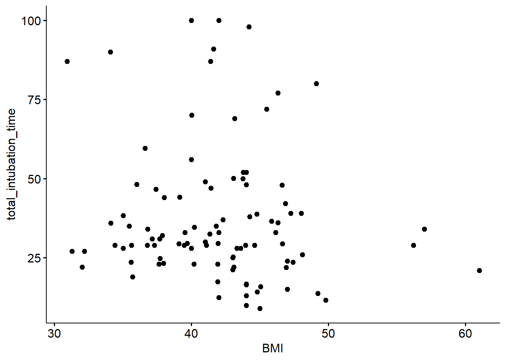
La funció ggscatter() crea un gràfic de punts a partir de les dades laryngoscope data = dades, col·locant la variable x = "BMI" a l’eix horitzontal i la variable y = "total_intubation_time" al vertical. Fixa’t que el nom de les variables s’escriu entre comes , ” “, i conincideix exactament amb el nom de la variable dins del data frame.
Sempre que fem referència a un nom l’escriurem entre comes. A més, si fem referència a una variable o etiqueta de dins les dades, ens hem d’assegurar d’escriure el seu nom a la funció del gràfic exactament com està escrita dins del data frame.
Totes les funcions de ggpubr utilitzen el mateix esquema:
A partir d’aquí es poden afegir arguments per modificar l’estètica del gràfic.
Es pot definir el color de les observacions mitjançant l’argument color =
Totes les observacions d’un color en concret indicant el nom del color:
color = "red"En funció d’una tercera variable (e.g. sexe) indicant el nom exacte de la variable en les dades
color = "gender_fct"
## Warning: Removed 2 rows containing missing
## values or values outside the scale
## range (`geom_point()`).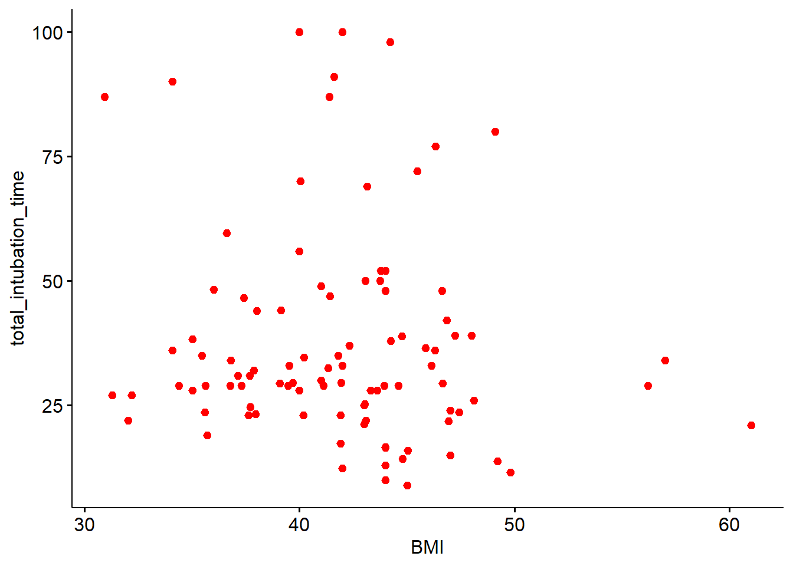
ggscatter(data = dades, x = "BMI", y = "total_intubation_time",
color = "gender_fct") # color en funció del grup/categoria## Warning: Removed 2 rows containing missing
## values or values outside the scale
## range (`geom_point()`).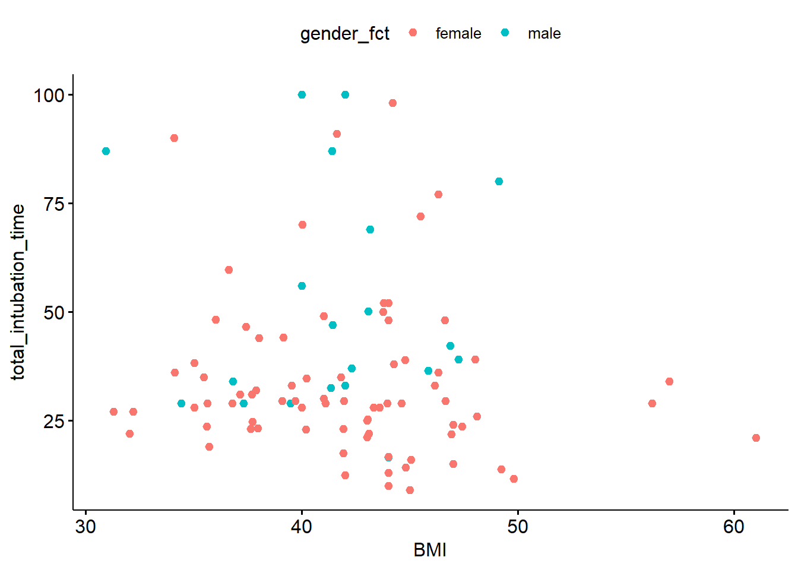
De la mateixa manera, es pot modificar la dimensió o la forma de totes els punts mitjançant l’argument size = 5 o shape = 8, o bé en funció d’una variable en concret size = age o shape = treatment.
# Canvi de mida de tots els punts
ggscatter(data = dades, x = "BMI", y = "total_intubation_time",
size = 5)## Warning: Removed 2 rows containing missing
## values or values outside the scale
## range (`geom_point()`).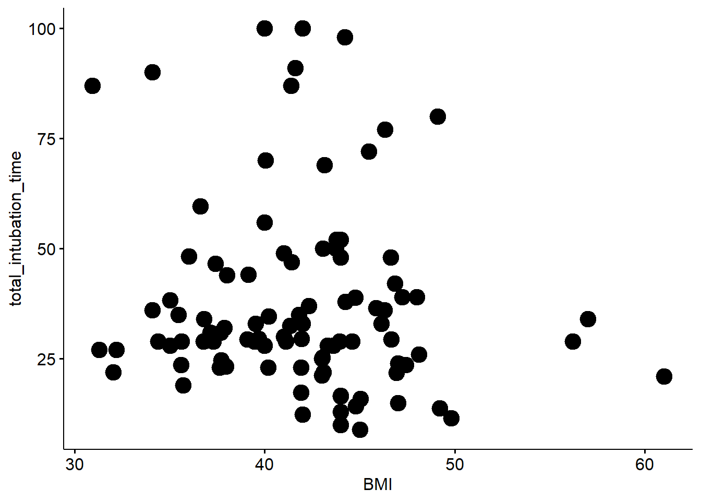
# Canvi de forma de tots els punts
ggscatter(data = dades, x = "BMI", y = "total_intubation_time",
shape = 8)## Warning: Removed 2 rows containing missing
## values or values outside the scale
## range (`geom_point()`).# Canvi de forma en funció d'una tercera variable
ggscatter(data = dades, x = "BMI", y = "total_intubation_time",
size = "BMI")## Warning: Removed 2 rows containing missing
## values or values outside the scale
## range (`geom_point()`).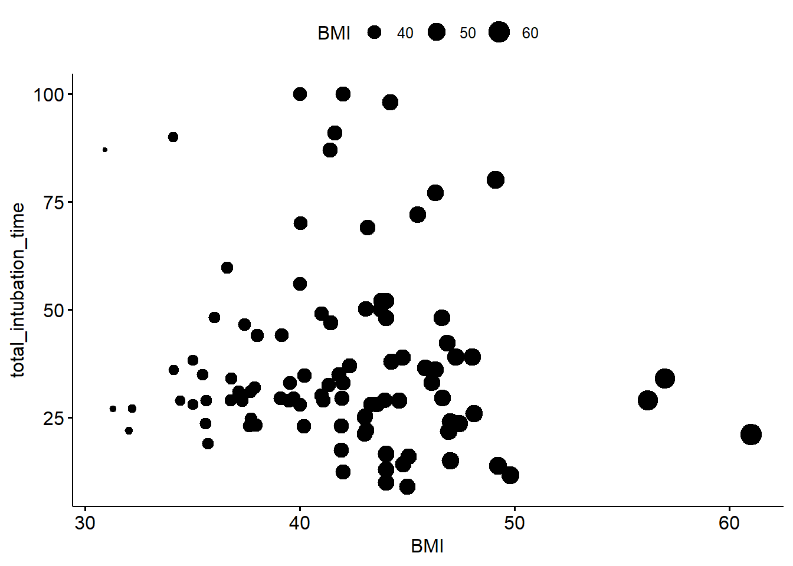
# Canvi de forma en funció d'una tercera variable
ggscatter(data = dades, x = "BMI", y = "total_intubation_time",
shape = "gender_fct")## Warning: Removed 2 rows containing missing
## values or values outside the scale
## range (`geom_point()`).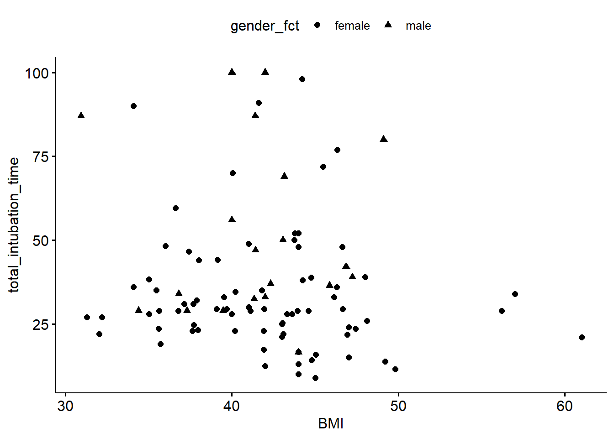
💡 Consell
Consulta els codis/noms de colors disponibles amb la funció colors() i les formes mitjançant show_point_shapes().
Altres arguments del gràfic que es poden modificar de manera ràpida són el títol (title =), els noms dels eixos (xlab = o ylab =), i el títol de la llegenda (legend.title =). Recorda que els noms sempre han d’anar entre comes ““.
ggscatter(data = dades, x = "age", y = "total_intubation_time",
color = "gender_fct",
xlab = "BMI",
ylab = "Temps intubació",
legend.title = "Sexe")## Ignoring unknown labels:
## • fill : "Sexe"
## • linetype : "Sexe"
## • shape : "Sexe"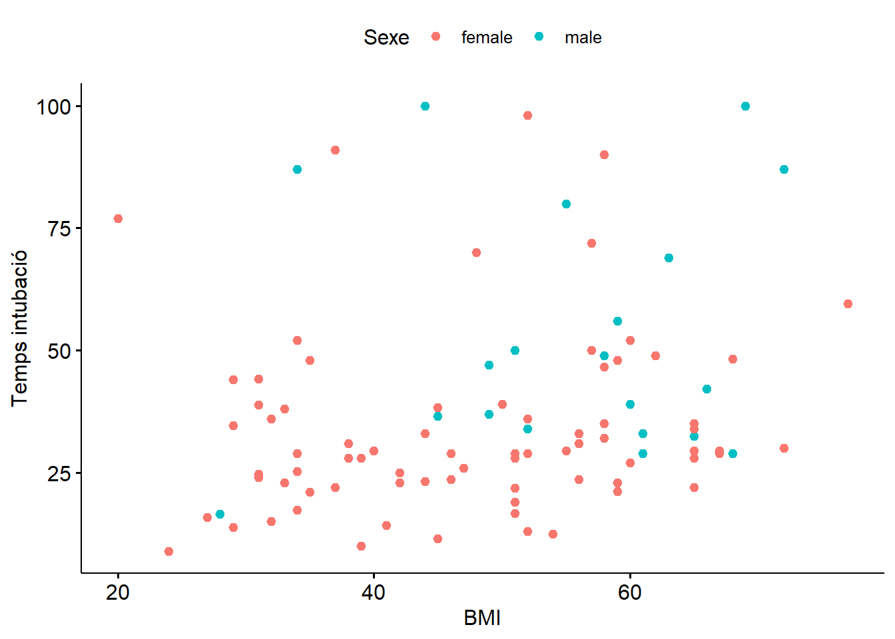
Exercicis
- Continua treballant amb el conjunt de dades laryngoscope. Quines dimensions té el data frame? Quantes columnes i quantes files?
- Creus que el temps que es tarda en intubar als pacients està associat a l’edat? Crea un gràfic per visualitzar la relació entre edat i el temps d’intubació
- Busca informació sobre les dades amb la funció
?laryngoscope. Què representa la variableRandomization?
- Quin tipus de variable és? La seva estructura (per defecte) és correcte? Crea una nova variable dins del data frame anomenada
method_fcta partir deRandomization.
- Inclou al gràfic anterior la informació sobre el mètode d’intubació.
- Ajusta els noms dels eixos i la llegenda del gràfic.
- Creus que hi ha diferències en el temps d’intubació entre homes i dones? Crea un gràfic per visualitzar la relació entre
total_intubation_timeigender_fct.
Solució
## [1] 99## [1] 23## num [1:99] 0 0 0 0 0 0 0 0 0 0 ...# Transformar a factor la variable Randomization (crear un nova variable)
dades$method_fct <- factor(dades$Randomization,
levels = c(0, 1),
labels = c("Standard Macintosh #4", "AWS Pentaz Video"))
str(dades$method_fct)## Factor w/ 2 levels "Standard Macintosh #4",..: 1 1 1 1 1 1 1 1 1 1 ...# Scatter plot 1: relació Temps total intubació ~ Edat
ggscatter(data = dades, x = "age", y = "total_intubation_time")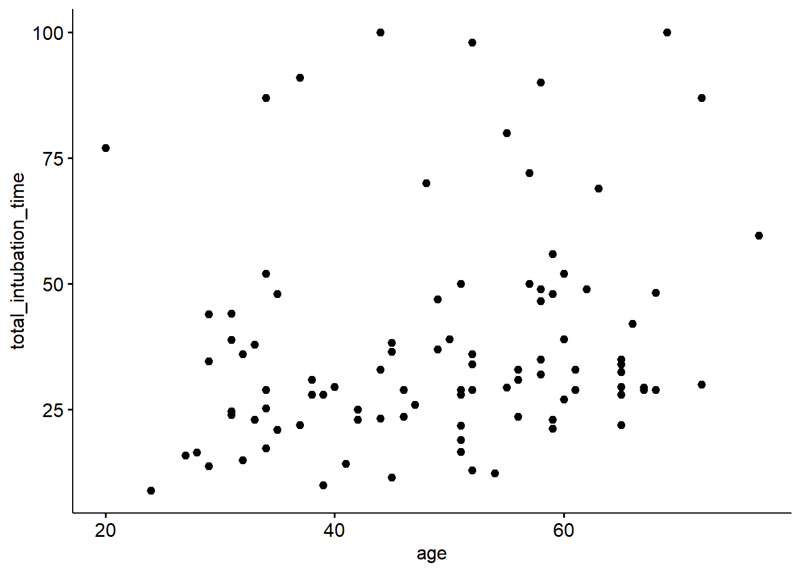
# Scatter plot 2: relació Temps total intubació ~ Edat i method_fct
ggscatter(data = dades, x = "age", y = "total_intubation_time",
color = "method_fct")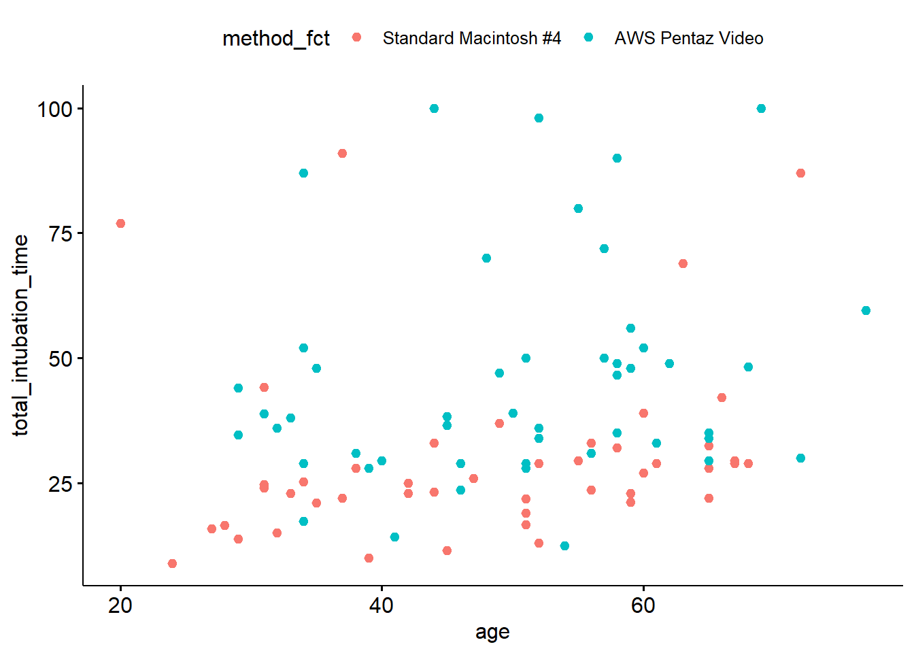
# Scatter plot 3: nom dels eixos i títol de la llegenda
ggscatter(data = dades, x = "age", y = "total_intubation_time",
color = "method_fct",
xlab = "Edat",
ylab = "Temps d'intubació",
legend.title = "Mètode")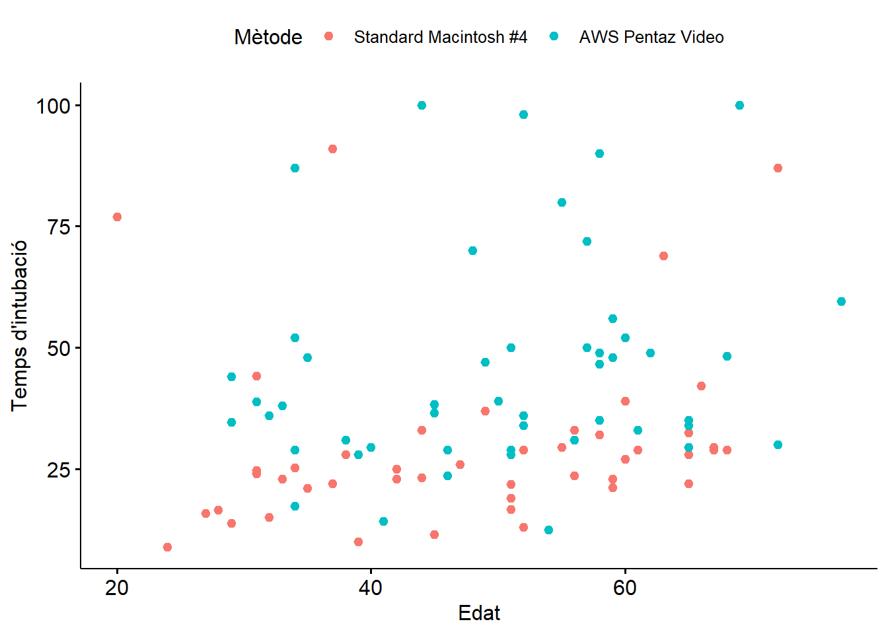
# Scatter plot 4: relació Temps total intubació ~ Sexe
ggscatter(data = dades, x = "gender_fct", y = "total_intubation_time")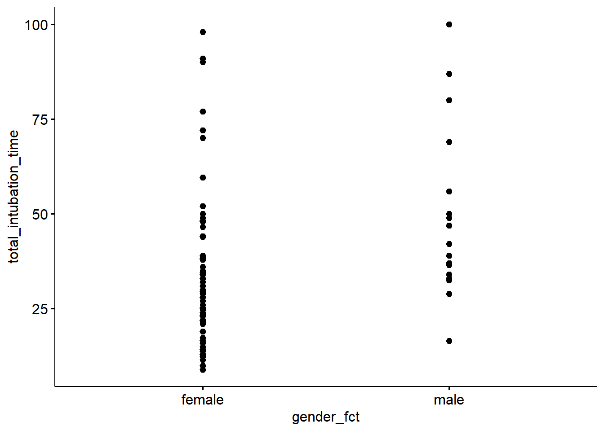
1.3 Bàsics d’R
Continuarem amb més gràfics i visualitzacions a les properes sessions, però abans anem a repassar algunes claus del llenguatge de codi d’R.
1.3.1 Bàsics del llenguatge d’R
El software R en si és una calculadora, per tant, pot calcular des de les operacions més bàsiques fins a càlculs complexes.
Qualsevol operació que escribim al script (o a la consola), R ho detectarà com a càlcul. En canvi, afegint el # a l’inici del codi el programa entendrà que és un comentari, i per tant, no calcularà (o executarà) res del que hi hagi a la dreta del símbol.
Comentar les línies amb # et facilitarà a tu (i als teus companys) a llegir i entendre el codi. Pots utilitzar els comentaris per explicar el perquè del codi. A mida que el codi sigui més llarg i complex pots utilitzar salts per crear diferents seccions.
# Això és un simple comentari. A continuació es mostren els salts per crear seccions i subseccions
# Sessió 1. --------------------------------------
## Bloc 1. Introducció a l'R --------------------------------------
## Bloc 2. Primeres Visualitzacions --------------------------------------
## Bloc 3. Bàsics d'R --------------------------------------
# Sessió 2. --------------------------------------Escriu el codi de sobre al teu script i clica a l’icona de dalt a la dreta de la finestra de l’script per visualitzar l’índex de continguts (Figura 1.2).
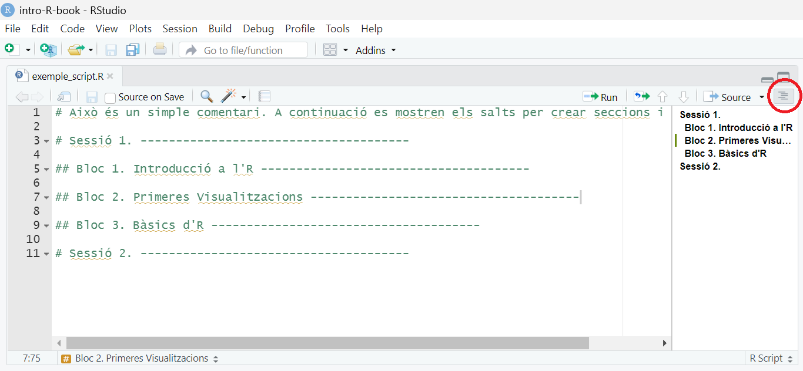
Figure 1.2: Finestra del Script d’RStudio. Clicant a l’icona de dalt a la dreta (cercle vermell) es desplega l’índex de continguts del script.
Ara que ja tens les eines principals per poder organitzar el teu propi codi, anem a veure algunes de les possibilitats que ens ofereix R.
A continuació hi ha alguns exemples de càlculs bàsics i comentaris:
## [1] 11## [1] 1.5## [1] 2.302585## [1] 25## [1] 4## [1] 4## [1] 3.141593## [1] 7.389056També podem assignar valors a un objecte determinat i fer operacions amb ell:
## [1] 10Totes les instruccions amb R en les quals es crea un objecte (instruccions d’assignació) tenen la mateixa estructura:
nom_objecte <- valorQuan llegeixis aquest codi, digues mentalment: ‘el nom de l’objecte rep el valor’.
Et faràs un tip de generar instruccions d’assignació i <- és poc pràctic de teclejar. Com a alternativa pots fer servir la drecera de RStudio: Alt + - (tecla Alt alhora que la del símbol menys)
A l’hora d’executar el codi, R no té en compte els espais ni els canvis de línia dins del codi, però segurament tu agrairàs llegir el codiambespaisbenposats.
T’hauràs adonat que quan crees un objecte, no veus el seu valor. T’aconsello que sempre que facis una instrucció d’assignació visualitzis el valor de l’objecte que acabes de construir. Ho pots fer simplement escribint el seu nom.
## [1] 12.3Per veure el valor de l’objecte quan el construeixes pots afegir ( a l’inici i ) al final de la instrucció:
## [1] 12.3
Una altra drecera d’RStudio per escriure ràpidament els noms dels objectes creats (molt útil sobretot pels noms llargs!): escriu “ob” + TAB + selecciona el teu objecte
1.3.1.1 Tipus de valors
Els valors no només són numèrics, sinó que hi ha diferents tipus de valors amb característiques molt diferents:
integers (números enters): -1, 0, 2, 2025
doubles/numerics (números contínus): -24.56, 0.32
logicals: TRUE, FALSE
characters: “home”, “vermell”, “Hola, avui fa un bon dia”
Per saber amb quin tipus estem treballant podem utilitzar la funció class()
## [1] "numeric"## [1] "logical"## [1] "character"## [1] FALSEA les properes sessions veurem que podem crear objectes que continguin un conjunt de valors. Aquests s’anomenen vectors.
1.3.2 Les peculiaritats dels noms
Ets lliure de posar els noms que tu vulguis als teus objectes, però hi ha alguns criteris que ha de complir qulsevol nom:
Ha de començar amb una lletra
Pot contenir lletres, números,
_i.
Els noms dels objectes han de ser descriptius, és per això, que hauràs de buscar algun tipus de “convenció” pels noms amb més d’una paraula. Personalment, et recomano utilitzar la barra baixa per separar paraules, però hi ha altres opcions:
jo_faig_servir_barra_baixa
altresPersonesFanServirMajuscules
algunes.persones.punts
I_unsQuants.REBUTGENlaConvencióPer escollir bons noms hauràs de trobar l’equilibri entre la llargada (ni massa curt ni massa llarg) i la quantitat d’informació que descriu. Tot i que els noms curts són fàcils i ràpids d’escriure, utilitzar masses abreviatures farà que perdis temps en desxifrar cada una d’elles si no te’n recordes.
Quan has de crear diferents objectes relacionats amb un mateix tema o projecte, et recomano que siguis consistent i utilitzis un patró determinat.
Crea un nou objecte:
Prova de visualitzar l’objecte mitjançant:
R et farà tots els càlculs que vulguis, però tu t’has d’assegurar d’escriure les instruccions de manera correcta i precisa. El cas anterior és un exemple clar d’aquest acord entre tu i R. El programa no pot endevinar les eves intencions, per tant, t’has d’assegurar que li dones les instruccions correctes.
1.3.3 Les llibreries i les funcions d’R
Les llibreries d’R (també anomenats paquets) són col·leccions de funcions i dades desenvolupades per la comunitat. Aquests incrementen el potencial d’R millorant les funcions base d’R o afegint-ne de noves.
T’has d’imaginar R com un garatge amb diferents caixes d’eines que corresponent les llibreries d’R. Cada eina (funció d’R) és útil per executar una tasca en concret i es troba dins la seva caixa (llibreria). Per utilitzar qualsevol de les eines has d’agafar la caixa que toca i obrir-la (carregar la llibreria a la sessió d’R). Si no tens la caixa on hi ha l’eina que et fa falta l’hauràs d’anar a comparar prèviament (instal·lar el paquet, això només un sol cop!).
Els paquets s’allotgen a repositoris especifics des d’on ens els podem descarregar. CRAN i Bioconductor són els repositoris més populars en el camp de l’estadistica i la bioinformàtica.
Github és el repositori més popular per la publicació de projectes open source, tot i que no és específic per R.
Com instal·lar paquets a R
- CRAN
install.packages("ggplot2")- Bioconductor
if (!requireNamespace("BiocManager"))
install.packages("BiocManager")
BiocManager::install("limma")La funció library() ens permet carregar les llibreries a la sessió on estem treballant.
L’estructura de les funcions
Les funcions d’R segueixen totes una mateixa estructura de codi:
nom_funcio(arg1 = val1, arg2 = val2, ...)Per entendre l’estructura de les funcions utilitzarem seq() que crea seqüències de números.
Escriu seq i veuràs que et surten diferents opcions. Posa’t sobre seq() i t’apareixarà una finestra amb algunes especificacions sobre la funció. Per aprofundir més sobre la funció pots escriure ?seq().
Selecciona seq() i R t’escriurà els dos parèntesis. Dins d’ells escriu el nom del primer argument from i assigna-hi 1. Ara escriu el nom del segon argument to i assigna-hi 10. Finalment prem Enter.
## [1] 1 2 3 4 5 6 7 8 9 10A vegades, ens podem estalviar d’escriure els noms dels arguments i introduim els valors corresponents directament (mantenint l’ordre especificat per la funció). El següent codi genera el mateix resultat que l’anterior:
## [1] 1 2 3 4 5 6 7 8 9 10Escriu el següent codi (no facis copia i enganxa) i veuràs que a l’obrir les comes, l’Rstudio t’escriu les comes de tancament.
Els parèntesis i les comes han d’anar sempre en parelles: un obre i l’altre tanca.
Pots provar el què passa quan executes el següent codi: x <- "hola!. El resultat és (observa la teva consola):
El símbol + indica que R creu que encara no has acabat, i espera que li donis més input. Pots acabar-li d’escriure les comes que falten " (des de la consola) o bé clicar ESC.
Ara mira la finestra de “Environment” d’RStudio. Allà hi pots veure tots els objectes que has anat creant.
Exercicis
- Crea tres objectes: (I)
nomamb el teu nom, (II)edatamb una edat, (III)sanitariaamb TRUE o FALSE.
- Comprova la classe de cada objecte.
- Canvia
edata caràcter amb la funcióas.character(edat)i explica què passa quan proves edat + 1.
Els següents exercicis s’han extret del llibre R for Data Science (II edició), estrit per Hadley Wickham, Mine Çetinkaya-Rundel, and Garrett Grolemund. [2]
- Fixa’t en el següent codi. Sabries identificar l’error?
- Corregeix les següents línies per tal d’executar el codi correctament:
1.4 Bibliografia
Abdallah, R., Galway, U., You, J., Kurz, A., Sessler, D. I., & Doyle, D. J. (2011). A randomized comparison between the Pentax AWS video laryngoscope and the Macintosh laryngoscope in morbidly obese patients. Anesthesia and analgesia, 113(5), 1082–1087. https://doi.org/10.1213/ANE.0b013e31822cf47d
Grolemund, G., & Wickham, H. (2017). R for Data Science. O’Reilly Media. https://r4ds.hadley.nz/